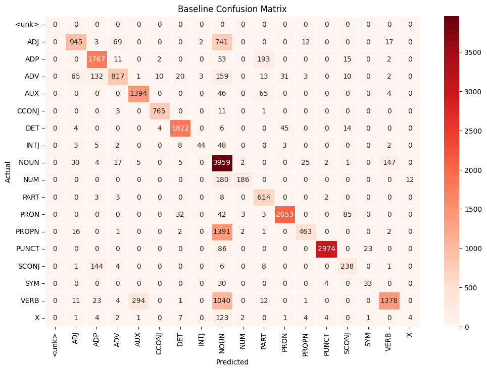
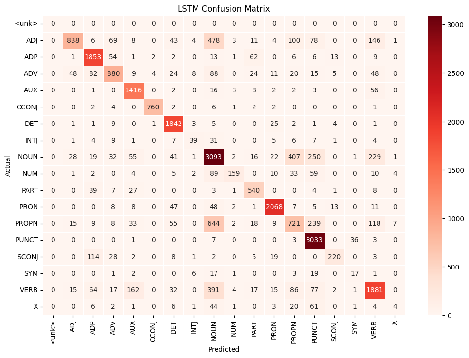

Colx 525 Lab Assignment 3: POS Tagging#
Assignment objectives#
In this assignment, you will develop a POS tagger using pytorch. You will:
Read in training, development and test data using
torchtext.Implement a baseline majority class tagger.
Numericalize data (i.e. transform sentences and words into
torch.Tensorobjects).Develop a BiLSTM POS tagger.
The pytorch documentation will be useful in this lab.
Getting started#
You will need to install the Python modules torchtext, torch and numpy. The easiest way to do this is using anaconda or pip.
Tidy Submission#
rubric={mechanics:1}
To get the marks for tidy submission:
Submit the assignment by filling in this jupyter notebook with your answers embedded
Be sure to follow the general lab instructions
This is a paired lab. Each member of the team should submit identical labs to their submission repos. Please indicate clearly who you were working with.
Exercise 1: Reading in data#
We will now read in training development and test sets using the torchtext library which can simplify your data handling code. Please have a look at Practical lecture 6.
Before you do anything else, please download the following file, place it in your Lab3 directory and unzip it:
https://https://github.ubc.ca/MDS-CL-2024-25/COLX_525_morphology_students/tree/master/data/uddata.zip
We’ll start by installing the conllu library which can read data Universal Dependencies treebank data. We’ll also read the English UD training, development and test set from the uddata directory.
import sys
!{sys.executable} -m pip install conllu
Requirement already satisfied: conllu in /Users/lida/miniforge3/envs/colx525/lib/python3.11/site-packages (6.0.0)
import conllu
import os
import torch
from torchtext.vocab import build_vocab_from_iterator
from torch.utils.data import DataLoader
from torch.nn.utils.rnn import pad_sequence
def read_data(dire, lang):
train_data = conllu.parse(open(os.path.join(dire, f"{lang}-ud-train.conllu.head"), encoding="utf-8").read())
dev_data = conllu.parse(open(os.path.join(dire, f"{lang}-ud-dev.conllu"), encoding="utf-8").read())
test_data = conllu.parse(open(os.path.join(dire, f"{lang}-ud-test.conllu"), encoding="utf-8").read())
return train_data, dev_data, test_data
train_data, dev_data, test_data = read_data("uddata","en")
/Users/lida/miniforge3/envs/colx525/lib/python3.11/site-packages/torchtext/vocab/__init__.py:4: UserWarning:
/!\ IMPORTANT WARNING ABOUT TORCHTEXT STATUS /!\
Torchtext is deprecated and the last released version will be 0.18 (this one). You can silence this warning by calling the following at the beginnign of your scripts: `import torchtext; torchtext.disable_torchtext_deprecation_warning()`
warnings.warn(torchtext._TORCHTEXT_DEPRECATION_MSG)
/Users/lida/miniforge3/envs/colx525/lib/python3.11/site-packages/torchtext/utils.py:4: UserWarning:
/!\ IMPORTANT WARNING ABOUT TORCHTEXT STATUS /!\
Torchtext is deprecated and the last released version will be 0.18 (this one). You can silence this warning by calling the following at the beginnign of your scripts: `import torchtext; torchtext.disable_torchtext_deprecation_warning()`
warnings.warn(torchtext._TORCHTEXT_DEPRECATION_MSG)
Let’s look at the format of the UD data. We’ll print the first token in the first training sentence. As you can see, the token is represented by a dictionary with several fields. For our purposes, the most important ones are:
formwhich gives the word form, anduposwhich gives the Universal Dependencies POS tag.
len(train_data)
train_data[0][0]
{'id': 1,
'form': 'Al',
'lemma': 'Al',
'upos': 'PROPN',
'xpos': 'NNP',
'feats': {'Number': 'Sing'},
'head': 0,
'deprel': 'root',
'deps': None,
'misc': {'SpaceAfter': 'No'}}
Exercise 1.1#
rubric={accuracy:5}
Following the example in lecture6 and this tutorial, implement a UDDataset class. It should be a subclass of torch.utils.data.Dataset.
Your __init__ function should take a dataset (train_data, dev_data or test_data) as argument. and assign it as self.data. You’ll also need to define __len__ and __getitem__ member functions which return the length of self.data and and element at index i respectively.
# Your code here
# Your code here
class UDDataset(torch.utils.data.Dataset):
# Replace pass with an actual class definition
def __init__(self, dataset):
"""
Initializes the dataset object with data.
:param dataset: List of parsed conllu data.
"""
self.data = dataset
def __len__(self):
"""
Returns the number of sentences in the dataset.
"""
return len(self.data)
def __getitem__(self, idx):
"""
Retrieves the idx-th sentence from the dataset.
:param idx: Index of the sentence to retrieve.
:return: The sentence at the specified index.
"""
return self.data[idx]
train = UDDataset(train_data)
Exercise 1.2#
rubric={accuracy:5}
We’ll now compile three vocabularies: one for words, one for characters and one for POS tags.
Let’s start by initializing generators for words (yield_tokens), characters (yield_chars) and POS tags (yield_pos). These extract words, characters and POS tags from a batch of examples.
Note, that:
yield_tokensgenerates a list of tokens:["the", "dog", "sleeps"]yield_charsgenerates a list of characters:["t", "h", "e", "d", "o", "g", "s", "l", "e", "e", "p", "s"](notice the lack of spaces between words)yield_posgenerates a list of POS tags:["DET","NOUN","VERB"]
def yield_tokens(data):
for ex in data:
yield([tok["form"] for tok in ex])
def yield_chars(data):
for ex in data:
yield([c for tok in ex for c in tok["form"]])
def yield_pos(data):
for ex in data:
yield([tok["upos"] for tok in ex])
print("First training example:")
print("Tokens:",next(yield_tokens(train)))
print("Characters:", next(yield_chars(train)))
print("POS:", next(yield_pos(train)))
First training example:
Tokens: ['Al', '-', 'Zaman', ':', 'American', 'forces', 'killed', 'Shaikh', 'Abdullah', 'al', '-', 'Ani', ',', 'the', 'preacher', 'at', 'the', 'mosque', 'in', 'the', 'town', 'of', 'Qaim', ',', 'near', 'the', 'Syrian', 'border', '.']
Characters: ['A', 'l', '-', 'Z', 'a', 'm', 'a', 'n', ':', 'A', 'm', 'e', 'r', 'i', 'c', 'a', 'n', 'f', 'o', 'r', 'c', 'e', 's', 'k', 'i', 'l', 'l', 'e', 'd', 'S', 'h', 'a', 'i', 'k', 'h', 'A', 'b', 'd', 'u', 'l', 'l', 'a', 'h', 'a', 'l', '-', 'A', 'n', 'i', ',', 't', 'h', 'e', 'p', 'r', 'e', 'a', 'c', 'h', 'e', 'r', 'a', 't', 't', 'h', 'e', 'm', 'o', 's', 'q', 'u', 'e', 'i', 'n', 't', 'h', 'e', 't', 'o', 'w', 'n', 'o', 'f', 'Q', 'a', 'i', 'm', ',', 'n', 'e', 'a', 'r', 't', 'h', 'e', 'S', 'y', 'r', 'i', 'a', 'n', 'b', 'o', 'r', 'd', 'e', 'r', '.']
POS: ['PROPN', 'PUNCT', 'PROPN', 'PUNCT', 'ADJ', 'NOUN', 'VERB', 'PROPN', 'PROPN', 'PROPN', 'PUNCT', 'PROPN', 'PUNCT', 'DET', 'NOUN', 'ADP', 'DET', 'NOUN', 'ADP', 'DET', 'NOUN', 'ADP', 'PROPN', 'PUNCT', 'ADP', 'DET', 'ADJ', 'NOUN', 'PUNCT']
Following the example in lecture 6, use build_vocab_from_iterator and the training set to define:
a word vocabulary
word_vocabbased on the tokens generated byyield_tokens. Your vocabulary should contain the special symbols: <unk>, <start> and <end>a character vocabulary
char_vocabbased on the tokens generated byyield_chars. Your vocabulary should contain the special symbols: <unk>, <start>, <end> and <pad>a pos vocabulary
pos_vocabbased on the tokens generated byyield_pos. Your vocabulary should contain the special symbol: <unk>
Hint: Remember to call set_default_index to set the ID for the <unk> token.
# Your code here
from torchtext.vocab import build_vocab_from_iterator
from collections import Counter
def build_vocabulary(data_iterator, specials):
"""
Build a vocabulary from an iterator.
:param data_iterator: An iterator that yields lists of elements (tokens, characters, or tags).
:param specials: A list of special tokens to include in the vocabulary.
"""
# Counter to hold all tokens and their frequencies
counter = Counter()
for data in data_iterator:
counter.update(data)
# Return a vocabulary built from the counter and include special tokens
vocab = build_vocab_from_iterator([counter.keys()], specials=specials)
vocab.set_default_index(vocab["<unk>"])
return vocab
# Build vocabularies
word_vocab = build_vocabulary(yield_tokens(train), specials=["<unk>", "<start>", "<end>"])
char_vocab = build_vocabulary(yield_chars(train), specials=["<unk>", "<start>", "<end>", "<pad>"])
pos_vocab = build_vocabulary(yield_pos(train), specials=["<unk>"])
# Printing some example data from the vocabularies
print("Word Vocabulary:", list(word_vocab.get_stoi().items())[:10]) # Show first 10 entries
print("Character Vocabulary:", list(char_vocab.get_stoi().items())[:10]) # Show first 10 entries
print("POS Vocabulary:", list(pos_vocab.get_stoi().items())[:10]) # Show first 10 entries
Word Vocabulary: [('“', 4737), ('’’', 4736), ('’73', 4734), ('’', 4732), ('yuor', 4727), ('youth', 4726), ('yourself', 4725), ('your', 4724), ('you', 4720), ('yesterday', 4718)]
Character Vocabulary: [('“', 94), ('’', 93), ('é', 90), ('Ã', 89), ('³', 88), ('w', 84), ('v', 83), ('t', 81), ('s', 80), ('r', 79)]
POS Vocabulary: [('X', 17), ('VERB', 16), ('SYM', 15), ('SCONJ', 14), ('PUNCT', 13), ('PRON', 11), ('NUM', 9), ('INTJ', 7), ('DET', 6), ('PROPN', 12)]
Exercise 1.3#
rubric={accuracy:10}
We’ll now write a collate_batch function which numericalizes a batch of examples into torch tensors.
We’ll use the following transformation functions which tokenize and numericalize the tokens, characters and POS tags, respectively. Note that both word_transform and char_transform add <start> and <end> tokens to the input.
word_transform = lambda s: [word_vocab[w] for w in ["<start>"] + s + ["<end>"]]
pos_transform = lambda s: [pos_vocab[w] for w in s]
char_transform = lambda w: [char_vocab[c] for c in ["<start>"] + w + ["<end>"]]
The function collate_batch takes a batch of examples as input. It extracts the tokens, characters and POS tags for each example using yield_tokens, yield_chars and yield_pos, respectively.
Your first task to use word_transform and pos_transform to transform token and POS lists into torch tensors (with data type torch.long). You should store the tensors as token_tensor and pos_tensor. token_tensor should have size sentence_length + 2 x 1 and pos_tensor will have size sentence_length x 1. The + 2 comes from adding start and end symbols to tokens.
Hint: You may need to call the torch function unsqueeze to ensure the correct size.
Your second task is to convert chars into a list of tensors of shape 1 x word_length. Remember that yield_chars returns a long list containing all the characters in the input sentence. You should first split this up into a list containing inidividual words like ["t", "h", "e"] using the function split_char_sequence. Store the result as chars.
You can then use char_transform to numericalize each word in chars. Again, store the resulting list as chars. Finally, compile each numericalized word in chars into a torch tensor with dtype torch.long. Store the result as char_tensor.
from itertools import islice
from collections import namedtuple
Example = namedtuple("Example",["word", "pos", "char"])
def split_char_sequence(chars, tokens):
""" Split a sequence of characters representing a sentence into
sequences representing the individual words in the sentence
["t","h","e","d","o","g","s","l","e","e","p","s"] ->
[["t","h","e"], ["d","o","g"], ["s","l","e","e","p","s"]]
Arguments:
chars: A list of chars ["t","h","e","d","o","g","s","l","e","e","p","s"]
tokens: A list of tokens ["the", "dog", "sleeps"]
"""
word_lens = [len(w) for w in tokens]
chars = iter(chars)
return [list(islice(chars, elem)) for elem in word_lens]
def collate_batch(batch):
pos_list, token_list, char_list, word_lens = [], [], [], []
for tokens, chars, pos in zip(yield_tokens(batch),
yield_chars(batch),
yield_pos(batch)):
# Your code here
token_tensor = torch.tensor(word_transform(tokens), dtype=torch.long).unsqueeze(1)
pos_tensor = torch.tensor(pos_transform(pos), dtype=torch.long).unsqueeze(1)
chars = split_char_sequence(chars, tokens)
char_tensors = [torch.tensor(char_transform(word), dtype=torch.long) for word in chars]
max_word_length = max(len(x) for x in char_tensors)
char_tensors = [
torch.cat([
x,
torch.full(
(max_word_length - len(x),),
char_vocab["<pad>"],
dtype=torch.long
)
]) if len(x) < max_word_length else x
for x in char_tensors
]
char_tensor = torch.stack(char_tensors, dim=0)
# Your code here
pos_list.append(pos_tensor)
token_list.append(token_tensor)
char_list += char_tensors
return Example(token_list[0],
pos_list[0],
(pad_sequence(char_list, batch_first=True, padding_value=char_vocab["<pad>"]).unsqueeze(0),
len(token_list[0])-2,
[len(w) for w in tokens]))
# Some assertions to check your code
b = collate_batch(dev_data[0:1])
assert(b.word.size()[0] == len(dev_data[0]) + 2)
assert(b.pos.size()[0] == len(dev_data[0]))
chars, _, _ = b.char
assert(chars.size()[2] == len(dev_data[0]))
assert(chars.size()[1] == max([len(tok["form"]) for tok in dev_data[0]]) + 2)
Let’s then use the function to numericalize the training, development and test data. Note, that we set shuffle=True for the training set.
dev_iter = DataLoader(dev_data, batch_size=1, shuffle=False, collate_fn=collate_batch)
test_iter = DataLoader(test_data, batch_size=1, shuffle=False, collate_fn=collate_batch)
train_iter = DataLoader(train_data, batch_size=1, shuffle=True, collate_fn=collate_batch)
We’ll then take a closer look at the examples in our datasets:
ex = next(iter(dev_iter))
print("ex.word is a tensor containing the word tokens in the sentence:")
print(ex.word)
print("It has size sentence_length+2 x 1:")
print(ex.word.size())
print()
print("ex.pos is a tensor containing the POS tags in the sentence:")
print(ex.pos)
print("It has size sentence_length x 1:")
print(ex.pos.size())
print()
print("ex.char is a tuple having three elements:")
char_tensor, sentence_length, word_lengths = ex.char
print("char_tensor contains character-sequence representations of the tokens in the sentence")
print(char_tensor)
print("It has size 1 x sentence_length x sequence_length:")
print(char_tensor.size())
print()
print("sentence_length simply gives the sentence_length (without <start> and <end> tokens):")
print(sentence_length)
print()
print("word_lengths contains the length of each word in the sentence (without <start> and <end> tokens):")
print(word_lengths)
ex.word is a tensor containing the word tokens in the sentence:
tensor([[ 1],
[ 521],
[4345],
[ 0],
[1857],
[4368],
[4200],
[ 145],
[ 2]])
It has size sentence_length+2 x 1:
torch.Size([9, 1])
ex.pos is a tensor containing the POS tags in the sentence:
tensor([[ 2],
[ 6],
[12],
[16],
[ 6],
[ 8],
[13]])
It has size sentence_length x 1:
torch.Size([7, 1])
ex.char is a tuple having three elements:
char_tensor contains character-sequence representations of the tokens in the sentence
tensor([[[ 1, 38, 79, 76, 74, 2, 3],
[ 1, 81, 69, 66, 2, 3, 3],
[ 1, 33, 48, 2, 3, 3, 3],
[ 1, 64, 76, 74, 66, 80, 2],
[ 1, 81, 69, 70, 80, 2, 3],
[ 1, 80, 81, 76, 79, 86, 2],
[ 1, 29, 2, 3, 3, 3, 3]]])
It has size 1 x sentence_length x sequence_length:
torch.Size([1, 7, 7])
sentence_length simply gives the sentence_length (without <start> and <end> tokens):
7
word_lengths contains the length of each word in the sentence (without <start> and <end> tokens):
[4, 3, 2, 5, 4, 5, 1]
Exercise 2: Simple baseline tagger#
To be able to gauge the performance of our deep learning tagger, we’ll now implement a baseline majority label classifier.
Exercise 2.2 Tagging the development data#
rubric={accuracy:5}
The next step is to tag the development data. For each example in the development set, you should append a list of predicted POS tags to output_tags.
For each word in an example, output its most common tag given by tag_counts. For OOV (out-of-vocabulary) words which are missing from tag_counts, you can predict NOUN.
output_tags = []
word_itos = word_vocab.get_itos()
for ex in dev_iter:
output_tags.append([])
for wf in ex.word[1:-1]:
wf = word_itos[wf]
# your code here
if wf in tag_counts:
# Get the most common POS tag for the word from tag_counts
most_common_tag = tag_counts[wf].most_common(1)[0][0]
output_tags[-1].append(most_common_tag)
else:
# Default to 'NOUN' if the word is out of vocabulary
output_tags[-1].append('NOUN')
# your code here
Using the accuracy function below, you can now print the baseline tagging accuracy on the development set. It should be around 77%.
def accuracy(sys,gold):
"""
Function for evaluating tagging accuracy w.r.t. a gold standard test set (gold).
"""
assert(len(sys) == len(gold))
corr = 0
tot = 0
pos_itos = pos_vocab.get_itos()
for s, g in zip(sys,gold):
assert(len(s) == len(g.pos))
corr += sum([1 if x==pos_itos[y] else 0 for x,y in zip(s,g.pos)])
tot += len(s)
return corr * 100.0 / tot
print("Accuracy for baseline majority class tagger:",accuracy(output_tags,dev_iter))
Accuracy for baseline majority class tagger: 77.36599331954828
Exercise 3: The POS tagger#
In this exercise, you will build a basic BiLSTM POS tagger. The tagger:
Embeds word tokens in the input sentence.
Passes the embeddings through a bidirectional LSTM layer.
Predicts POS tags using a feed-forward network and log softmax layer.
When you are implementing the POS tagger, remember to always keep track of the input and output sizes of all of you tensors. It is very important to check that these are correct. It is also important to understand what your dimensions refer to.
Let’s start by loading a few necessary libraries and setting hyper-parameters:
import numpy as np
import torch
import torch.nn as nn
from torch.nn.utils.rnn import pack_padded_sequence, pad_packed_sequence
from torch.nn.functional import log_softmax, relu
from torch.optim import Adam, SGD
from random import random, seed, shuffle
# Ensure reproducible results by setting random seeds to 0.
seed(0)
torch.manual_seed(0)
np.random.seed(0)
import re
# Hyperparameters
EMBEDDING_DIM=300
RNN_HIDDEN_DIM=50
RNN_LAYERS=1
BATCH_SIZE=1
EPOCHS=5
# Maximum length of generated output word forms.
MAXWFLEN=40
Exercise 3.1: LSTM layer#
rubric={accuracy:15}
You should implement a BidirectionalLSTM class which is used to encode a sequence of word embeddings into representations. BidirectionalLSTM encapsulates two LSTM networks: self.forward_rnn and self.backward_rnn which you should initialize in BidirectionalLSTM.__init__. Both should have:
Embedding dimension
self.embedding_dim(this is a parameter to the__init__function)Hidden dimension
RNN_HIDDEN_DIMLayer count
RNN_LAYERS
Your second task is to implement the BidirectionalLSTM.forward function. As argument, the function takes a torch.Tensor sequence which has size (sequence_length,1,EMBEDDING_DIM). This tensor contains the word embeddings for the input sentence.
You should pass the sequence to self.forward_rnn which returns:
a sequence \(f_1,...,f_n\) of forward hidden states represented as a tensor
fwd_hsshaving size(sequence_length,1,RNN_HIDDEN_DIM)anda pair
(fwd_hs, fwd_cs), where:fwd_hsis the final forward hidden state having dimension(1,1,RNN_HIDDEN_DIM).fwd_csis the final forward cell state having dimension(1,1,RNN_HIDDEN_DIM).
You should pass the reversed sequence to self.backward_rnn (HINT: torch.flip can be useful here) which returns:
a sequence \(b_n,...,b_1\) of backward hidden states represented as a tensor
bwd_hsshaving size(sequence_length,1,RNN_HIDDEN_DIM)(NOTE! the backward states are reversersed here)and a pair
(bwd_hs, bwd_cs), where:bwd_hsis the final backward hidden state having dimension(1,1,RNN_HIDDEN_DIM).bwd_csis the final backward cell state having dimension(1,1,RNN_HIDDEN_DIM).
The forward function should return a tensor hss having dimension (sequence_length, 1, 2*self.hidden_dim), where hss[i] represents the concatenation of the \(i\)th forward hidden state \(f_i\) and the \(i\)th backward hidden state \(b_i\) (HINT: Again torch.flip can be useful).
class BidirectionalLSTM(nn.Module):
def __init__(self, embedding_dim=EMBEDDING_DIM):
super(BidirectionalLSTM, self).__init__()
self.embedding_dim = embedding_dim
self.hidden_dim = RNN_HIDDEN_DIM
# Define forward LSTM
self.forward_rnn = nn.LSTM(input_size=self.embedding_dim,
hidden_size=self.hidden_dim,
num_layers=RNN_LAYERS,
batch_first=False)
# Define backward LSTM
self.backward_rnn = nn.LSTM(input_size=self.embedding_dim,
hidden_size=self.hidden_dim,
num_layers=RNN_LAYERS,
batch_first=False)
def forward(self, sequence):
"""
Args:
sequence: (sequence_length, 1, EMBEDDING_DIM)
Returns:
hss: (sequence_length, 1, 2*RNN_HIDDEN_DIM)
"""
# Forward LSTM processing
fwd_hss, (fwd_hs, fwd_cs) = self.forward_rnn(sequence)
# fwd_hss: (sequence_length, 1, RNN_HIDDEN_DIM)
# fwd_hs: (1, 1, RNN_HIDDEN_DIM) # Last hidden state
# fwd_cs: (1, 1, RNN_HIDDEN_DIM) # Last cell state
# Reverse sequence for backward LSTM
reversed_sequence = torch.flip(sequence, dims=[0])
# Backward LSTM processing
bwd_hss, (bwd_hs, bwd_cs) = self.backward_rnn(reversed_sequence)
# bwd_hss: (sequence_length, 1, RNN_HIDDEN_DIM)
# Reverse backward hidden states to match the original order
bwd_hss = torch.flip(bwd_hss, dims=[0])
# Concatenate forward and backward hidden states
hss = torch.cat((fwd_hss, bwd_hss), dim=2)
# hss: (sequence_length, 1, 2*RNN_HIDDEN_DIM)
return hss
assert(BidirectionalLSTM()(torch.zeros(10,1,EMBEDDING_DIM)).size() == (10,1,2*RNN_HIDDEN_DIM))
In order to improve tagging accuracy for OOV words, we need to use word dropout. It takes two arguments:
A
torch.Tensorsequenceof size(sequence_length,1)andA float
word_dropoutin the interval[0,1]. During training, the function randomly replaces words byword_vocab["<unk>"]with probability ‘word_dropout’.
def drop_words(sequence,word_dropout):
seq_len, _ = sequence.size()
dropout_sequence = sequence.clone()
for i in range(1,seq_len-1):
if random() < word_dropout:
dropout_sequence[i,0] = word_vocab["<unk>"]
return dropout_sequence
# Assertions to check that your code returns objects of the correct size (not a guarantee that your code works).
assert(drop_words(torch.zeros(10,1),0.5).size() == (10,1))
Exercise 3.2 Sentence Encoder#
rubric={accuracy:15}
Your next task is to build a class SentenceEncoder which takes an example (from train_iter, dev_iter or test_iter) as input and returns a sequence of LSTM hidden states given by BidirectionalLSTM.
You first task is to initialize the SentenceEncoder class. You will initialize 3 class-members:
self.vocabularywhich is just an alias forword_vocab.self.embeddingswhich is atorch.nn.Embeddinghaving input dimensionlen(self.vocabulary)and output dimensionEMBEDDING_DIM. (This is just transforming a sparse vector into a dense one.)self.rnnwhich is aBidirectionalLSTMobject.
You should then implement SentenceEncoder.forward which takes as example ex as input. Additionally, it takes another parameter word_dropout which is the probability for word dropout on the sentence ex. The function should:
Perform word dropout on
exby calling thedrop_wordsfunction above.Embed the resulting tensor resulting in a tensor
embedded.Run
self.rnnon embedded.Return the resulting representation tensor. However,
ex.wordrepresents a sentence where we have appended an initial symbolSTARTand final symbolEND. You need to therefore clip the first and last representation vector before returning the output ofself.rnn.
class SentenceEncoder(nn.Module):
def __init__(self):
super(SentenceEncoder, self).__init__()
# Initialize vocabulary
self.vocab = word_vocab
# Word embedding layer
self.embedding_layer = nn.Embedding(
num_embeddings=len(self.vocab),
embedding_dim=EMBEDDING_DIM
)
# BiLSTM for encoding
self.bilstm = BidirectionalLSTM()
def forward(self, ex, word_dropout):
"""
Encodes the input sentence with word dropout and BiLSTM processing.
Args:
ex: An Example object with sentence data.
word_dropout (float): Probability to replace words with <unk>.
Returns:
torch.Tensor: The output of the BiLSTM, excluding <start> and <end> tokens.
"""
# Adjust input to ensure proper shape
word_sequence = ex.word.unsqueeze(1) if ex.word.dim() == 1 else ex.word
# Apply word dropout
dropped_sequence = drop_words(word_sequence, word_dropout) # (sequence_length, 1)
# Convert words into embeddings
embedded_sequence = self.embedding_layer(dropped_sequence) # (sequence_length, 1, EMBEDDING_DIM)
# Pass through BiLSTM
bi_lstm_output = self.bilstm(embedded_sequence) # (sequence_length, 1, 2*RNN_HIDDEN_DIM)
# Remove <start> and <end> token representations
return bi_lstm_output[1:-1] # (sentence_length, 1, 2*RNN_HIDDEN_DIM)
ex = next(iter(dev_iter))
sentence_length = ex.word.size()[0] - 2
assert(SentenceEncoder()(ex, 0.5).size() == (sentence_length, 1, 2*RNN_HIDDEN_DIM))
Exercise 3.3: Prediction Layer#
rubric={accuracy:15}
Your next task is to implement a feed-forward network FeedForward which is used to predict tags from LSTM representations. The constructor feedForward.__init__ takes two arguments input_dim and output_dim representing the input and output dimension of the network, respectively.
Your first task is to complete the function FeedForward.__init__ by initializing two linear layers:
self.linear1having input dimensioninput_dimand output dimensioninput_dimandself.linear2having input dimensioninput_dimand output dimensionoutput_dim.
Your second task is to implement the function FeedForward.forward. As input, the function takes tensor which is a torch.Tensor object having size (sequence_length, 1, input_dim). It then:
Applies
self.linear1followed by a ReLU activation function ontensorandthen passes the result through
self.linear2and alog_softmaxlayer and finally returns the result.
import torch.nn.functional as F
class FeedForward(nn.Module):
def __init__(self, input_dim, output_dim):
"""
Args:
input_dim (int): Dimension of input tensor (should match BiLSTM output).
output_dim (int): Number of output classes (e.g., POS tag count).
"""
super(FeedForward, self).__init__()
# Initialize layers
# First linear layer: input_dim -> input_dim (hidden layer)
self.fc1 = nn.Linear(input_dim, input_dim)
# Second linear layer: input_dim -> output_dim (final output layer)
self.fc2 = nn.Linear(input_dim, output_dim)
def forward(self, tensor):
"""
Forward pass for FeedForward POS tag predictor.
Args:
tensor (torch.Tensor): LSTM hidden states of shape (sequence_length, 1, input_dim)
Returns:
torch.Tensor: Predicted logits with shape (sequence_length, 1, output_dim)
"""
# Apply first linear layer + ReLU activation
hidden = F.relu(self.fc1(tensor))
# Apply second linear layer + log_softmax for output
output = F.log_softmax(self.fc2(hidden), dim=-1)
return output
# Assertions to check that your code returns objects of the correct size (not a guarantee that your code works).
assert(FeedForward(2*RNN_HIDDEN_DIM, 100)(torch.zeros(10, 1, 2*RNN_HIDDEN_DIM)).size() == (10, 1, 100))
Tagging sentences and training the model#
Now it’s time to put together all the components that you built so far. SimplePOSTagger is a wrapper around a SentenceEncoder and FeedForward layer. It has a forward method which returns a tensor res where res[i,j] represents the log probability of tag pos_vocab.get_itos()[j] for the word at position i in our input sentences.
The function tag gets POS tags for a dataset data.
class SimplePOSTagger(nn.Module):
def __init__(self):
super(SimplePOSTagger,self).__init__()
self.tagset_size = len(pos_vocab)
self.sentence_encoder = SentenceEncoder()
self.hidden2tag = FeedForward(2*RNN_HIDDEN_DIM,self.tagset_size)
def forward(self,ex, word_dropout=0):
states = self.sentence_encoder(ex,word_dropout)
return self.hidden2tag(states)
def tag(self,data):
with torch.no_grad():
results = []
pos_itos = pos_vocab.get_itos()
for ex in data:
tags = self(ex).argmax(dim=2).squeeze(1)
results.append([pos_itos[i] for i in tags])
return results
pos_size = len(pos_vocab)
ex = next(iter(dev_iter))
assert(SimplePOSTagger()(ex).size() == (ex.word.size()[0]-2,1,pos_size))
assert(len(SimplePOSTagger().tag([ex])[0]) == ex.word.size()[0] -2)
Armed with the SimplePOSTagger class, you can now train your tagger using the following code. You should get to around 75% tagging accuracy on the development set.
tagger = SimplePOSTagger()
optimizer = Adam(tagger.parameters())
loss_function = nn.NLLLoss()
for epoch in range(EPOCHS):
tot_loss = 0
for i,ex in enumerate(train_iter):
print("Epoch %u: Example %u of %u" % (epoch+1, i+1,len(train)),end="\r")
tagger.zero_grad()
output = tagger(ex,word_dropout=0.05).squeeze(dim=1)
gold = ex.pos.squeeze(dim=1)
loss = loss_function(output,gold)
loss.backward()
optimizer.step()
tot_loss += loss.detach().numpy()
print("\nAverage loss per example: %.4f" % (tot_loss/len(train_iter)))
sys_dev = tagger.tag(dev_iter)
print("Development accuracy: %.2f" % accuracy(sys_dev, dev_iter))
Epoch 1: Example 1000 of 1000
Average loss per example: 1.2465
Development accuracy: 71.81
Epoch 2: Example 1000 of 1000
Average loss per example: 0.4948
Development accuracy: 73.72
Epoch 3: Example 1000 of 1000
Average loss per example: 0.2514
Development accuracy: 77.28
Epoch 4: Example 1000 of 1000
Average loss per example: 0.1868
Development accuracy: 77.00
Epoch 5: Example 1000 of 1000
Average loss per example: 0.1630
Development accuracy: 77.00
You may notice that this is almost the same accuracy as for our baseline model. You can get a bit higher if you raise the number of epochs. If you really want better accuracy, you’ll have to implement a character-level model and use pretrained embeddings. These can get you up to 85%.
Exercise 3.4 Error breakdown#
rubric={accuracy:2, reasoning:2}
Now that you’ve established both a baseline and a better tagger, reconfigure your evaluation metric to build a confusion matrix for both the baseline and the tagger.
Your confusion matrix should compare each part of speech to each other part of speech, to determine the likelihood that a gold POS was misclassified as something else. It should also contain an overall accuracy for each part of speech. The results should be printed in a table.
For example, the “VB” row in your table may look like the following:
VB | 5 | 2 | 5 | 88 | 88% |
Where the columns represent instances that should be verbs, but were tagged as nouns, adjectives, adverbs, and verbs, respectively (with the final column reporting the final results).
Which 3 POS improve the most from using an informed classifier? Do any get worse? Which false categories get “fixed” the most?
import numpy as np
import pandas as pd
import seaborn as sns
import matplotlib.pyplot as plt
def build_confusion_matrix(gold_tags, pred_tags, pos_vocab):
"""
Build confusion matrix to compare gold-standard POS labels to predicted labels.
Args:
gold_tags (list of lists): Gold-standard POS tags for each sentence.
pred_tags (list of lists): Predicted POS tags for each sentence.
pos_vocab: POS vocabulary to map indices to POS tag strings.
Returns:
pd.DataFrame: Confusion matrix with accuracy details.
"""
pos_itos = pos_vocab.get_itos() # Index to string mapping for POS tags
num_classes = len(pos_itos)
confusion_matrix = np.zeros((num_classes, num_classes), dtype=int)
for gold_sent, pred_sent in zip(gold_tags, pred_tags):
for gold_pos, pred_pos in zip(gold_sent, pred_sent):
gold_idx = pos_itos.index(gold_pos)
pred_idx = pos_itos.index(pred_pos)
confusion_matrix[gold_idx, pred_idx] += 1
# Compute accuracy per POS tag
correct_counts = np.diag(confusion_matrix)
total_counts = confusion_matrix.sum(axis=1)
accuracies = np.round((correct_counts / np.maximum(total_counts, 1)) * 100, 2)
confusion_df = pd.DataFrame(confusion_matrix, index=pos_itos, columns=pos_itos)
confusion_df["Total"] = total_counts
confusion_df["Accuracy"] = [f"{acc}%" for acc in accuracies]
return confusion_df
def display_confusion_matrix(conf_matrix, title="Confusion Matrix"):
"""
Display a heatmap of the confusion matrix.
Args:
conf_matrix (pd.DataFrame): The confusion matrix.
title (str): The title to display above the heatmap.
"""
plt.figure(figsize=(12, 8))
sns.heatmap(conf_matrix.iloc[:, :-2], annot=True, fmt="d", cmap="Reds", linewidths=0.5)
plt.title(title)
plt.xlabel("Predicted")
plt.ylabel("Actual")
plt.show()
def compute_pos_accuracy(conf_matrix):
"""
Compute accuracy per POS tag.
Args:
conf_matrix (np.ndarray): Confusion matrix.
Returns:
list: Accuracy per POS tag.
"""
acc = []
row_sums = conf_matrix.sum(axis=1)
diag = np.diag(conf_matrix)
for i, s in enumerate(row_sums):
acc.append(diag[i] / s if s > 0 else float('nan'))
return acc
def evaluate_model(tagger, gold_data, pos_vocab):
"""
Evaluate the performance of a POS tagger.
Args:
tagger: The POS tagger model.
gold_data: Gold-standard data for evaluation.
pos_vocab: POS vocabulary.
Returns:
dict: Evaluation metrics including confusion matrix and accuracy.
"""
conf_matrix = compute_confusion_matrix(tagger, gold_data, pos_vocab)
pos_accuracy = compute_pos_accuracy(conf_matrix)
return conf_matrix, pos_accuracy
# Example usage for both baseline and LSTM models
baseline_predictions = output_tags # Baseline model predictions
lstm_predictions = tagger.tag(dev_iter) # LSTM model predictions
gold_labels = [[pos_vocab.get_itos()[idx] for idx in ex.pos.squeeze(1)] for ex in dev_iter] # Gold standard labels
# Compute confusion matrices for both models
baseline_confusion = build_confusion_matrix(gold_labels, baseline_predictions, pos_vocab)
lstm_confusion = build_confusion_matrix(gold_labels, lstm_predictions, pos_vocab)
# Display confusion matrices using heatmaps
display_confusion_matrix(baseline_confusion, "Baseline Confusion Matrix")
display_confusion_matrix(lstm_confusion, "LSTM Confusion Matrix")
# Extract accuracy columns and calculate improvement
baseline_acc = baseline_confusion["Accuracy"].str.replace("%", "").astype(float)
lstm_acc = lstm_confusion["Accuracy"].str.replace("%", "").astype(float)
# Calculate the improvement in accuracy
accuracy_improvement = lstm_acc - baseline_acc
# Top 3 POS tags with highest improvement
top_3_improved = accuracy_improvement.sort_values(ascending=False).head(3)
print("Top 3 POS with highest improvement:\n", top_3_improved)
# Find POS tags that got worse
top_worsened = accuracy_improvement.sort_values().head(3)
print("\nPOS that got worse:\n", top_worsened)
# Calculate total errors for both models
baseline_errors = baseline_confusion.iloc[:, :-2].sum().sum() - np.trace(baseline_confusion.iloc[:, :-2])
lstm_errors = lstm_confusion.iloc[:, :-2].sum().sum() - np.trace(lstm_confusion.iloc[:, :-2])
# Print error reduction
print(f"Baseline total errors: {baseline_errors}")
print(f"LSTM total errors: {lstm_errors}")
print(f"Total errors reduced by LSTM: {baseline_errors - lstm_errors}")
# Misclassifications analysis (fixed errors)
baseline_misclassifications = baseline_confusion.iloc[:, :-2].sum(axis=1) - np.diag(baseline_confusion.iloc[:, :-2])
lstm_misclassifications = lstm_confusion.iloc[:, :-2].sum(axis=1) - np.diag(lstm_confusion.iloc[:, :-2])
# Category with largest reduction in misclassification
fixed_errors = baseline_misclassifications - lstm_misclassifications
fixed_errors_sorted = fixed_errors.sort_values(ascending=False)
print("POS that got fixed the most:\n", fixed_errors_sorted.head(3))
# Additional evaluation for Baseline and BiLSTM models
baseline_conf_matrix, baseline_acc = evaluate_model(SimplePOSTagger(), dev_iter, pos_vocab)
bilstm_conf_matrix, bilstm_acc = evaluate_model(tagger, dev_iter, pos_vocab)
# POS improvement
pos_itos = pos_vocab.get_itos()
pos_improvements = {
pos: (bilstm_acc[i] - baseline_acc[i])
for i, pos in enumerate(pos_itos)
}
# Most improved POS tags
most_improved_pos = sorted(pos_improvements.items(), key=lambda x: -x[1])[:3]
print("Top 3 most improved POS:", most_improved_pos)
# POS tags that worsened
worsened_pos = [pos for pos, change in pos_improvements.items() if change < 0]
print("POS that worsened:", worsened_pos)
# Error corrections
error_corrections = baseline_conf_matrix - bilstm_conf_matrix
most_fixed_errors = np.unravel_index(np.argmax(error_corrections, axis=None), error_corrections.shape)
print("Most corrected misclassification: {} → {}".format(
pos_itos[most_fixed_errors[0]],
pos_itos[most_fixed_errors[1]]
))
# Display confusion matrix for BiLSTM model
confusion_df = pd.DataFrame(bilstm_conf_matrix, index=pos_itos, columns=pos_itos)
print("\n=== Confusion Matrix for BiLSTM ===")
print(confusion_df)


Top 3 POS with highest improvement:
VERB 18.19
PROPN 13.74
ADV 4.98
Name: Accuracy, dtype: float64
POS that got worse:
SYM -23.88
NOUN -20.63
PART -11.75
Name: Accuracy, dtype: float64
Baseline total errors: 5692
LSTM total errors: 5784
Total errors reduced by LSTM: -92
POS that got fixed the most:
VERB 503
PROPN 258
ADP 86
dtype: int64
Top 3 most improved POS: [('<unk>', nan), ('PUNCT', 0.9837820304897826), ('CCONJ', 0.9743589743589743)]
POS that worsened: ['SYM']
Most corrected misclassification: NOUN → SYM
=== Confusion Matrix for BiLSTM ===
<unk> ADJ ADP ADV AUX CCONJ DET INTJ NOUN NUM PART PRON \
<unk> 0 0 0 0 0 0 0 0 0 0 0 0
ADJ 0 838 6 69 8 0 43 4 478 3 11 4
ADP 0 1 1853 54 1 2 2 0 13 1 62 0
ADV 0 48 82 880 9 4 24 8 88 0 24 11
AUX 0 0 1 0 1416 0 2 0 16 3 8 2
CCONJ 0 0 2 4 0 760 2 0 6 1 2 2
DET 0 1 1 9 0 1 1842 3 5 0 0 25
INTJ 0 1 4 9 1 0 7 39 31 0 0 5
NOUN 0 28 19 32 55 0 41 1 3093 2 16 22
NUM 0 1 2 0 4 0 5 2 89 159 0 10
PART 0 0 39 7 27 0 0 0 3 1 540 0
PRON 0 0 0 8 8 0 47 0 48 2 1 2068
PROPN 0 15 9 8 33 0 55 0 644 2 18 9
PUNCT 0 0 0 0 1 0 0 0 7 0 0 0
SCONJ 0 0 114 28 2 0 8 1 2 0 5 19
SYM 0 0 0 1 2 0 0 6 17 1 0 0
VERB 0 15 64 17 162 0 32 0 391 4 17 15
X 0 0 6 2 1 0 6 1 44 1 0 3
PROPN PUNCT SCONJ SYM VERB X
<unk> 0 0 0 0 0 0
ADJ 100 78 0 0 146 1
ADP 6 6 13 0 9 0
ADV 20 15 5 0 48 0
AUX 2 3 0 0 56 0
CCONJ 0 0 0 0 1 0
DET 2 1 4 0 1 0
INTJ 6 7 1 0 4 0
NOUN 407 250 0 1 229 1
NUM 33 59 0 0 10 4
PART 0 4 1 0 8 0
PRON 7 5 13 0 11 0
PROPN 721 239 0 0 118 7
PUNCT 3 3033 0 36 3 0
SCONJ 0 0 220 0 3 0
SYM 3 19 0 17 1 0
VERB 86 77 2 1 1881 0
X 20 61 0 1 4 4
Analysis of POS Tagging Improvements#
3. Error Analysis#
Total baseline errors: 5,692
Total LSTM errors: 5,784
Net change: Increase of 92 errors
4. Most Fixed Error Categories#
The LSTM model was most successful in reducing misclassifications in:
VERB: 503 fewer errors
PROPN (Proper Nouns): 258 fewer errors
ADP (Adpositions): 86 fewer errors
Key Finding#
The most significant error correction was in the NOUN → SYM misclassification pattern, indicating that the LSTM model was particularly effective at distinguishing between these categories.
Conclusion#
While the LSTM model showed substantial improvements in handling verbs and proper nouns, it struggled with symbols and general nouns. This suggests that the model is better at capturing contextual patterns for action words and named entities, but may need improvement in handling more static or abstract categories like symbols and common nouns.
The results indicate a trade-off in the model’s performance, where improvements in some categories came at the cost of decreased accuracy in others. This suggests that further model refinement or feature engineering might be needed to achieve more balanced improvements across all POS categories.
Exercise 4: Character-based tagging (optional)#
In this exercise, you will extend your basic BiLSTM POS tagger to include character-based embeddings. In contrast to the basic tagger, the character-based tagger computes word embeddings as a concatenation of a token embedding derived from a regular nn.Embedding object and a character-based embedding which is computed by a bidirectional LSTM.
Again, always remember to keep track of the input and output sizes of all of you tensors. It is very important to check that these are correct.
Exercise 4.1 optional#
rubric={accuracy:3}
Start by implementing the CharEmbedding class which computes character-based embeddings using a bidirectional LSTM. Your first task is to implement the CharEmbedding.__init__ function. Initialize:
self.char_setwhich is just an alias forchar_vocab(which numericalizes individual characters like ‘a’).self.embeddingswhich is atorch.nn.Embeddinghaving input dimensionlen(self.char_set)and output dimensionEMBEDDING_DIM.self.rnnwhich is ann.LSTMobject (note, notBidirectionalLSTM!). You should set the embedding dimension toEMBEDDING_DIM, hidden dimension toRNN_HIDDEN_DIM, layer count toRNN_LAYERSandbidirectionaltoTrue.
After initializing CharEmbedding, you should implement the CharEmbedding.forward method. The method takes an example ex which represents a sentence as input. For each word in ex, forward embeds the characters in the word and passes the character embeddings through self.rnn. It then stores the final hidden state returned by self.rnn in a list and finally returns a tensor representing these states for every word in the sentence.
The function forward takes two inputs:
exand example representing the input sentence, andchar_dropouta real number between 0 and 1, which represents the probability for dropping a character during training.
We are interested in ex.char which is a tuple containing three tensors:
ex.char[0]is a1 x sentence_len x char_counttensor, wherechar_countis the length of the longest word in the sentence.ex.char[1]is a scalar representing the sentence lengthex.char[2]is a tensor of shape1 x sentence_lengthwhich contains the lengths of each word in the sentence. E.g.ex.char[2][0]is the length of the first word.
E.g. ex.char[0][:,0,:] represents the first word. The tensor might look like this:
tensor([[ 2, 29, 13, 13, 3, 1, 1, 1, 1, 1, 1]])
The word has 5 actual characters and the rest of the characters are padding characters. In this case, ex[2][0,0] == 5.
To implement forward, you should:
Initialize a list
embeddings.Loop through the word indices
iin1 ... sentence_length.Each word
ex.char[0][:,i,:]will containex.char[2][0,i]characters, the rest are padding. Initialize a tensorwordwhich contains all the characters from index0up to and includingex.char[2][0,i] - 1. Note thatwordshould be an order 3 tensor, so you’ll need to callunsqueeze(1).We will now perform character dropout. We can use the function
drop_words()to accomplish this. Call the functiondrop_words()passingwordandchar_dropoutas arguments.Embed the characters in
wordand pass them throughself.rnn. This should give you a tensor of size2 x 1 x RNN_HIDDEN_DIM(2 becauseself.rnnis bidirectional).Reshape the final state into a
1 x 1 x 2*RNN_HIDDEN_DIMtensor and append it toembeddings.After you’ve looped through the words in
ex, append a zero tensor of dimension1 x 1 x 2*RNN_HIDDEN_DIMat the front and end ofembeddings. We need to do this to take into account start and end of sentence markers (which are not present inex.char).Now,
embeddingsshould contain one character-based embedding for every word in the sentence + two embeddings for the start and end of sequence markers. Concatenate these into a(sentence_length + 2) x 1 x 2*RNN_HIDDEN_DIMtensor and return it.
class CharEmbedding(nn.Module):
"""Character-level word embedding model using bidirectional LSTM"""
def __init__(self):
"""Initialize model components"""
super(CharEmbedding, self).__init__()
# Define character vocabulary
self.char_set = char_vocab
# Define character embedding layer
self.embeddings = nn.Embedding(
num_embeddings=len(self.char_set),
embedding_dim=EMBEDDING_DIM,
padding_idx=self.char_set["<pad>"] # Use padding_idx to optimize padding token handling
)
# Define bidirectional LSTM layer
self.rnn = nn.LSTM(
input_size=EMBEDDING_DIM,
hidden_size=RNN_HIDDEN_DIM,
num_layers=RNN_LAYERS,
bidirectional=True,
batch_first=False
)
# Initialize weights
self._init_weights()
def _init_weights(self):
"""Initialize model weights"""
for name, param in self.named_parameters():
if 'weight' in name:
nn.init.xavier_uniform_(param)
elif 'bias' in name:
nn.init.zeros_(param)
def forward(self, ex, char_dropout):
"""
Forward pass function
Args:
ex: Example object containing sentence information
char_dropout (float): Character dropout probability
Returns:
torch.Tensor: Character-level word embeddings of shape (sentence_length+2, 1, 2*RNN_HIDDEN_DIM)
"""
embeddings = []
# Extract character-level tensor information
char_tensor, sentence_len, word_lengths = ex.char
# Ensure inputs are tensors
char_tensor = torch.as_tensor(char_tensor) if isinstance(char_tensor, list) else char_tensor
word_lengths = torch.as_tensor(word_lengths) if isinstance(word_lengths, list) else word_lengths
# Process each word in the sentence
for i in range(sentence_len):
# Get character sequence for current word
word = char_tensor[0, i, :word_lengths[i].item()].unsqueeze(1)
# Apply character dropout
dropped_word = drop_words(word, char_dropout)
# Character embedding
char_embedded = self.embeddings(dropped_word)
try:
# Process character sequence through LSTM
_, (final_hidden, _) = self.rnn(char_embedded)
# Concatenate final hidden states from bidirectional LSTM
word_embedding = torch.cat([
final_hidden[0], # Forward LSTM
final_hidden[1] # Backward LSTM
], dim=-1).unsqueeze(0)
except RuntimeError as e:
print(f"Error processing word at position {i}: {e}")
# Use zero tensor on error
word_embedding = torch.zeros(1, 1, 2 * RNN_HIDDEN_DIM)
embeddings.append(word_embedding)
# Add sentence start and end marker embeddings
zero_embedding = torch.zeros(1, 1, 2 * RNN_HIDDEN_DIM)
embeddings = [zero_embedding] + embeddings + [zero_embedding]
# Concatenate all word embeddings
return torch.cat(embeddings, dim=0)
def get_char_embeddings(self, char_indices):
"""Get embedding vectors for specified character indices"""
return self.embeddings(char_indices)
ex = next(iter(dev_iter))
sentence_length = ex.word.size()[0]
assert(CharEmbedding()(ex,0.5).size() == (sentence_length, 1, 2*RNN_HIDDEN_DIM))
Exercise 4.2 optional#
rubric={accuracy:2}
Your next task is to build a class CharSentenceEncoder which takes an example ex as input and returns a sequence of LSTM hidden states.
You first task is to initialize the CharSentenceEncoder class. Start by copying your initialization code from SentenceEncoder, but change the initialization of self.rnn slightly. It should have embedding dimension EMBEDDING_DIM+2*RNN_HIDDEN_DIM because we are feeding in concatenated token and character-based embeddings to self.rnn. You should also initialize self.char_embedding, which is a CharEmbedding object.
You should them implement CharSentenceEncoder.forward which takes as example ex as input. Additionally, it takes two other parameters word_dropout and char_dropout which represent the word and character dropout probabilities, respectively. The function should:
Perform word dropout on
exby calling thedrop_wordsfunction above.Embed the resulting tensor resulting in a tensor
word_embedded.Embed
exusingself.char_embeddinggiving a tensorchar_embedded(remember to passchar_dropoutas argument).Concatenate
word_embeddedandchar_embeddedinto a(sentence_length + 2) x 1 x (EMBEDDING_DIM + 2*RNN_HIDDEN_DIM)tensor.Run
self.rnnonembedded.Return the resulting representation tensor. Clip the first and last representation vector before returning the output of
self.rnn(these correspond to the start and end of sequence tokens).
class CharSentenceEncoder(nn.Module):
def __init__(self):
super(CharSentenceEncoder,self).__init__()
# your code here
# your code here
def forward(self,ex,word_dropout,char_dropout):
# your code here
# your code here
ex = next(iter(dev_iter))
sentence_length = ex.word.size()[0] - 2
assert(CharSentenceEncoder()(ex,0.5,0.5).size() == (sentence_length, 1, 2*RNN_HIDDEN_DIM))
---------------------------------------------------------------------------
NameError Traceback (most recent call last)
Cell In[29], line 99
97 ex = next(iter(dev_iter))
98 sentence_length = ex.word.size()[0] - 2
---> 99 assert(CharSentenceEncoder()(ex,0.5,0.5).size() == (sentence_length, 1, 2*RNN_HIDDEN_DIM))
NameError: name 'CharSentenceEncoder' is not defined
The following code defines and trains a character-based POS tagger which uses the classes that you implemented above. You should get accuracy > 80% on the development data.
Note that it can be much slower to train CharPOSTagger than SimplePOSTagger. This is partly due to the looping in CharEmbedding. There are more efficient ways to handle this and we’ll see some techniques next week.
class CharPOSTagger(nn.Module):
def __init__(self):
super(CharPOSTagger,self).__init__()
self.tagset_size = len(pos_vocab)
self.sentence_encoder = CharSentenceEncoder()
self.hidden2tag = FeedForward(2*RNN_HIDDEN_DIM,self.tagset_size)
def forward(self,ex, word_dropout=0, char_dropout=0):
states = self.sentence_encoder(ex,word_dropout,char_dropout)
return self.hidden2tag(states)
def tag(self,data):
with torch.no_grad():
results = []
pos_itos=pos_vocab.get_itos()
for ex in data:
tags = self(ex).argmax(dim=2).squeeze(1)
results.append([pos_itos[i] for i in tags])
return results
pos_size = len(pos_vocab)
ex = next(iter(dev_iter))
assert(CharPOSTagger()(ex).size() == (ex.word.size()[0]-2,1,pos_size))
assert(len(CharPOSTagger().tag([ex])[0]) == ex.word.size()[0] -2)
tagger = CharPOSTagger()
optimizer = Adam(tagger.parameters())
loss_function = nn.NLLLoss()
for epoch in range(EPOCHS):
tot_loss = 0
for i,ex in enumerate(train_iter):
print("Epoch %u: Example %u of %u" % (epoch+1, i+1,len(train_iter)),end="\r")
tagger.zero_grad()
output = tagger(ex,word_dropout=0.05).squeeze(dim=1)
gold = ex.pos.squeeze(dim=1)
loss = loss_function(output,gold)
loss.backward()
optimizer.step()
tot_loss += loss.detach().numpy()
print("\nAverage loss per example: %.4f" % (tot_loss/len(train_iter)))
sys_dev = tagger.tag(dev_iter)
print("Development accuracy: %.2f" % accuracy(sys_dev, dev_iter))